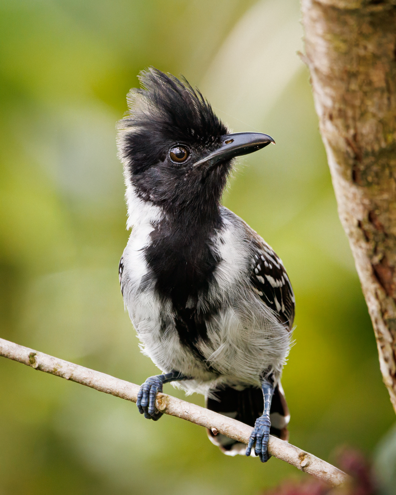
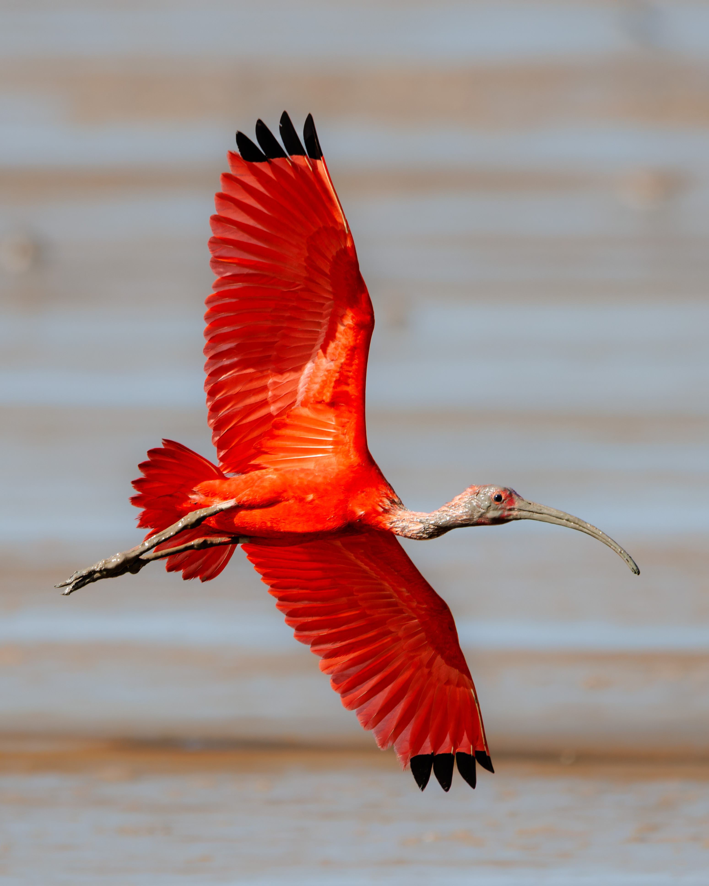
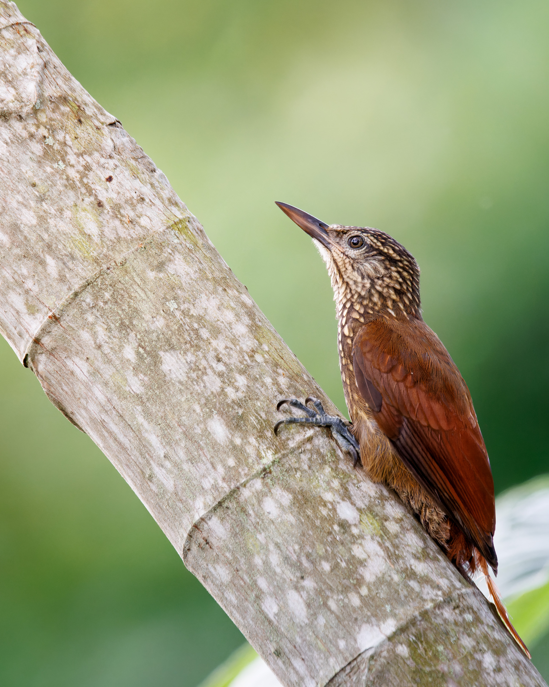
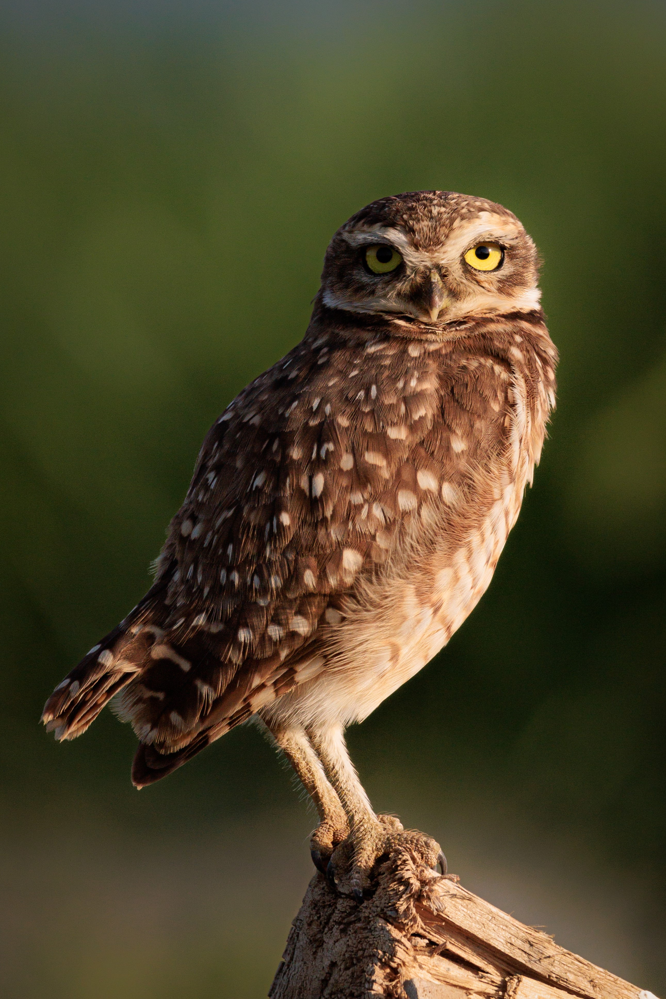

Gallery




From corporate wildlife branding to eco-tourism promotion, I provide professional photography solutions tailored to your business needs. Services include:
I’m Nathan Chinapen, a wildlife photographer and biologist with over 7 years of experience capturing the beauty of nature through my lens. My work blends scientific precision with artistic vision, offering a unique perspective on wildlife and landscapes.
A journey into the heart of Guyana’s vibrant wetland ecosystems, capturing rare species and pristine habitats.
From fieldwork to final edits, an inside look at how I create compelling wildlife images.